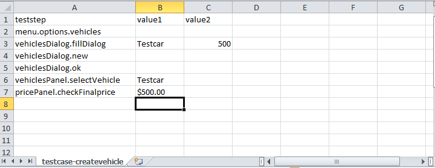
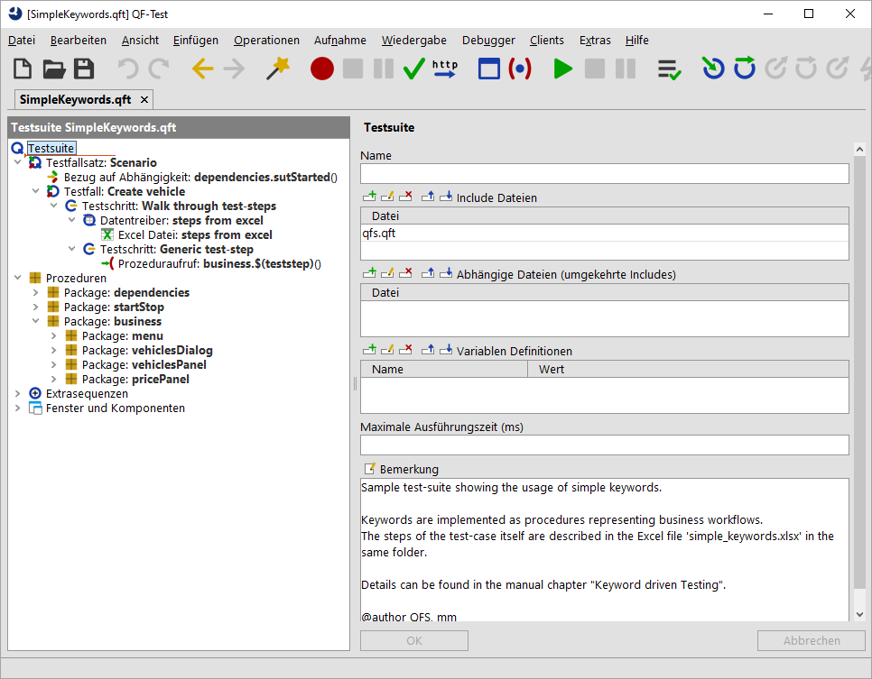
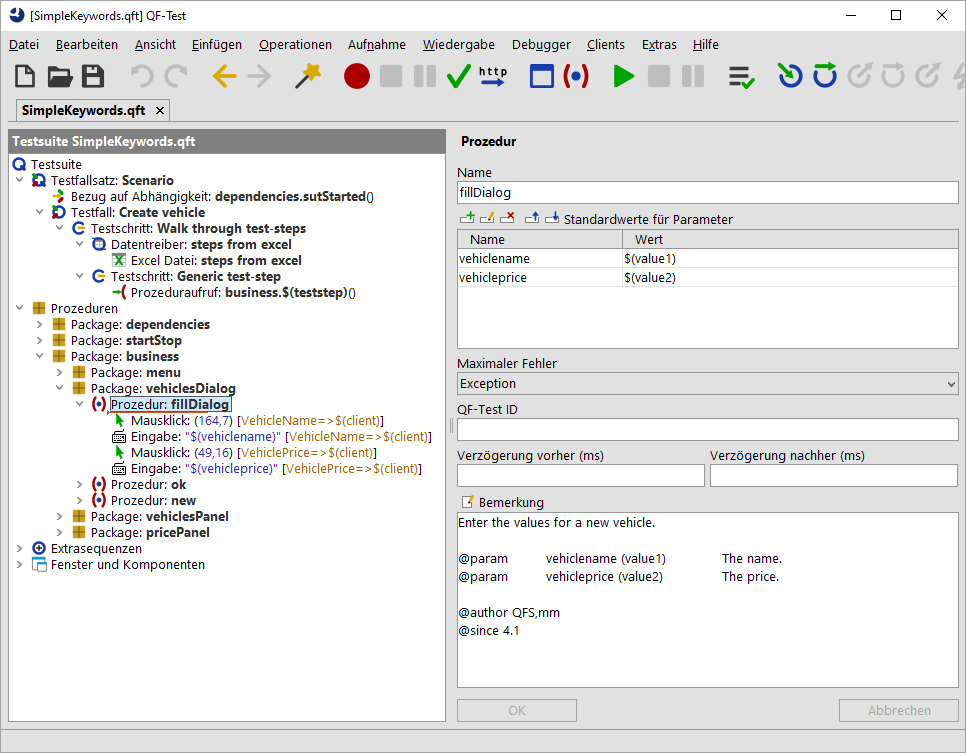

| Version 6.0.3 |
Wie eingangs bereits erwähnt stellen fachliche Prozeduren einen fachlichen Ablauf in Ihrer Anwendung dar.
Das dazugehörige Beispiel finden Sie unter qftest-6.0.3/demo/keywords/simple_business/
SimpleKeywords.qft.
Der dazugehörige Testplan
liegt unter qftest-6.0.3/demo/keywords/simple_business/
simple_keywords.xlsx.
Bitte achten Sie darauf, dass Sie den Ordner in ein projektspezifisches Verzeichnis kopieren und diese dort modifizieren.
Als Beispiel können wir uns den Testfall "Fahrzeug anlegen" für den CarConfigurator näher anschauen. Dieser Testfall besteht aus folgenden Schritten:
Wenden wir uns zuerst der Exceldatei zu.
|
|  | ||
|
| Abbildung 27.1: Exceldatei fachliche Schlüsselwörter | ||
Nachdem QF-Test Exceldateien zeilenweise lesen kann, haben wir uns für diesen Aufbau entschieden. Dieses Einlesen folgt dem Datentreiber Konzept (siehe Abschnitt 38.4). Ein anderer Aufbau der Exceldatei würde auch funktionieren. Der Vorteil des vorliegenden Beispiels ist, dass es ohne Skripte bzw. If-Abfragen auskommt.
In der ersten Zeile finden wir die Werte teststep, value1 und value2.
Diese Zeile wird später
von QF-Test als Variablennamen interpretiert werden, die pro Zeile in der Excel unterschiedliche Werte annehmen werden.
Nun soll QF-Test also schrittweise durch diese Exceldateien gehen und die geplanten Testschritte durchführen.
Um dieses Ziel zu erreichen, schauen wir uns nun die QF-Test Datei SimpleKeywords.qft an.
Diese Datei hat folgenden Aufbau:
|
|  | ||
|
| Abbildung 27.2: Testsuite fachliche Schlüsselwörter | ||
|
|
|
||||||||||||||||||||
|
| Tabelle 27.5: Aufbau von SimpleKeywords.qft | ||||||||||||||||||||
Die dafür benötigten Prozeduren sind im Package business implementiert. Damit Parameter dieser Prozeduren, die natürlich unterschiedlich sein können,
in der Exceldatei zusammengefasst werden können, werden die Excel-Parameter value1 bzw. value2 auf der jeweiligen Prozedur in die prozedurspezifischen
Parameter umgewandelt.
|
|  | ||
|
| Abbildung 27.3: Prozedur fillDialog | ||
Dieses Konzept erfordert also, dass die zu verwendenden Keywords bereits in QF-Test hinterlegt sind. Die Exceldatei muss ggf. um mehrere Spalten für die Testdaten erweitert werden, falls Prozeduren mehr als zwei Parameter benötigen. Pro Testfall muss es noch einen Testfall in QF-Test geben. Dies können Sie allerdings auch flexibler gestalten. Eine Beschreibung hierzu finden Sie unter Abschnitt 27.5.
| Letzte Änderung: 6.9.2022 Copyright © 1999-2022 Quality First Software GmbH |